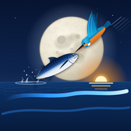

Alkyon · Terms of Use
Last updated: 11 November 2026 · Applies to the Alkyon web app (alkyonfishing.com), the Alkyon app for Android and the Alkyon app for Garmin watches.
Using Alkyon
You can use Alkyon free of charge, with or without an account. By using it you agree to these terms. If you do not agree, please do not use the app.
Forecasts, maps and safety
- Weather, sea, tide, depth and "good day" scores come from public models and data sources. They are estimates and can be wrong or out of date.
- Alkyon is not a navigation device and does not replace official charts, official weather warnings, a VHF radio or the judgement of the skipper.
- Safety features (safety contact, return-time messages, MOB, anchor alarm) depend on your phone, its battery, signal and settings. They may not work every time. Do not rely on them as your only means of safety.
- In an emergency call 112 or use VHF channel 16.
Fishing rules and protected areas
Minimum sizes, closed seasons, protected species and restricted areas are shown to help you, but rules change and the data may be incomplete. Always check the official rules of the competent authority before you fish or keep a catch (in Cyprus: the Department of Fisheries and Marine Research). You are responsible for what you catch and keep.
Your account and your data
- You are responsible for your account and for keeping your password safe.
- What you log stays yours. You can export it, delete it, or delete your whole account at any time from Profile › Account. See the Privacy Policy.
Community and friends
- Only post catches, photos and comments that are your own and that you have the right to share.
- Do not post anything illegal, abusive, hateful, sexual, misleading or spam, and do not share other people's private information.
- You can report posts and block other users. We may hide or remove content and suspend accounts that break these rules.
- By posting you allow Alkyon to show your post to other users of the app. You can delete your posts at any time.
Changes and availability
Alkyon is provided "as is". Features may change, and the service may be unavailable at times. We may update these terms; the date above shows the latest version.
Liability
To the extent allowed by law, Alkyon and its developer are not liable for any loss or damage arising from the use of the app or of its forecasts, maps or data. Nothing in these terms limits rights you have under the law of your country as a consumer.
Contact
Όροι χρήσης
Χρήση
Το Alkyon χρησιμοποιείται δωρεάν, με ή χωρίς λογαριασμό. Με τη χρήση του αποδέχεσαι αυτούς τους όρους.
Προγνώσεις, χάρτες και ασφάλεια
- Καιρός, θάλασσα, παλίρροια, βάθη και βαθμός ημέρας προέρχονται από δημόσια μοντέλα και πηγές. Είναι εκτιμήσεις και μπορεί να είναι λάθος ή παλιές.
- Το Alkyon δεν είναι όργανο ναυσιπλοΐας και δεν αντικαθιστά τους επίσημους χάρτες, τις επίσημες προειδοποιήσεις καιρού, τον ασύρματο VHF ή την κρίση του κυβερνήτη.
- Οι λειτουργίες ασφαλείας (επαφή ασφαλείας, μηνύματα επιστροφής, MOB, συναγερμός άγκυρας) εξαρτώνται από το κινητό, τη μπαταρία, το σήμα και τις ρυθμίσεις του. Μπορεί να μη δουλέψουν κάθε φορά. Μη βασίζεσαι μόνο σε αυτές.
- Σε ανάγκη κάλεσε 112 ή χρησιμοποίησε το κανάλι 16 του VHF.
Κανονισμοί αλιείας και προστατευόμενες περιοχές
Ελάχιστα μεγέθη, κλειστές περίοδοι, προστατευόμενα είδη και απαγορευμένες περιοχές φαίνονται για να σε βοηθήσουν, αλλά οι κανόνες αλλάζουν και τα στοιχεία μπορεί να μην είναι πλήρη. Έλεγξε πάντα τους επίσημους κανόνες της αρμόδιας αρχής (στην Κύπρο: Τμήμα Αλιείας και Θαλάσσιων Ερευνών). Η ευθύνη για ό,τι πιάνεις και κρατάς είναι δική σου.
Λογαριασμός και δεδομένα
Είσαι υπεύθυνος για τον λογαριασμό σου και τον κωδικό του. Ό,τι καταγράφεις είναι δικό σου: μπορείς να το εξαγάγεις, να το σβήσεις ή να διαγράψεις όλο τον λογαριασμό από το Προφίλ › Λογαριασμός. Δες την Πολιτική απορρήτου.
Κοινότητα και φίλοι
- Δημοσίευε μόνο δικά σου ψάρια, φωτογραφίες και σχόλια, που έχεις δικαίωμα να μοιραστείς.
- Όχι παράνομο, προσβλητικό, ρατσιστικό, σεξουαλικό ή παραπλανητικό περιεχόμενο, όχι spam, όχι προσωπικά στοιχεία άλλων.
- Μπορείς να αναφέρεις αναρτήσεις και να αποκλείσεις χρήστες. Μπορούμε να κρύψουμε ή να σβήσουμε περιεχόμενο και να αναστείλουμε λογαριασμούς που παραβαίνουν τους κανόνες.
- Με τη δημοσίευση επιτρέπεις στο Alkyon να δείχνει την ανάρτηση σε άλλους χρήστες. Μπορείς να τη σβήσεις όποτε θέλεις.
Αλλαγές, διαθεσιμότητα και ευθύνη
Το Alkyon παρέχεται «ως έχει». Οι λειτουργίες μπορεί να αλλάξουν και η υπηρεσία να μην είναι πάντα διαθέσιμη. Στον βαθμό που επιτρέπει ο νόμος, το Alkyon και ο δημιουργός του δεν ευθύνονται για ζημιά από τη χρήση της εφαρμογής ή των προγνώσεων, χαρτών και δεδομένων της. Οι όροι δεν περιορίζουν δικαιώματα που έχεις ως καταναλωτής από τον νόμο.